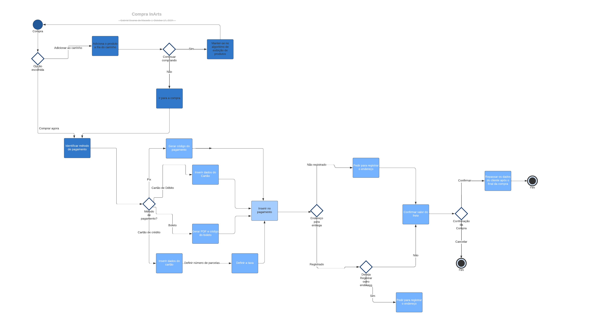
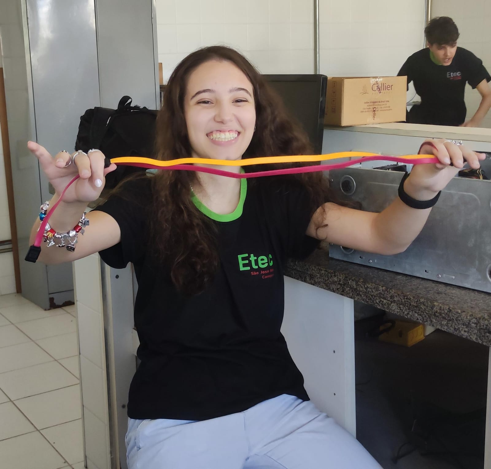
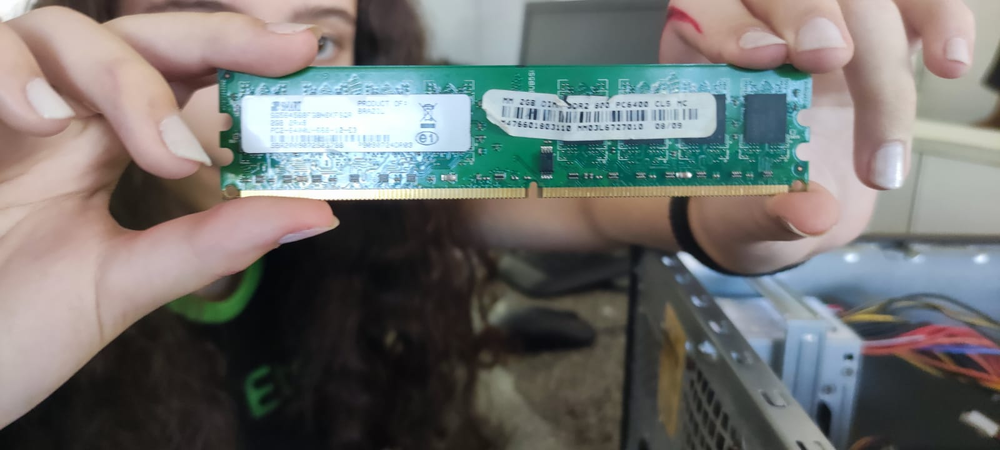
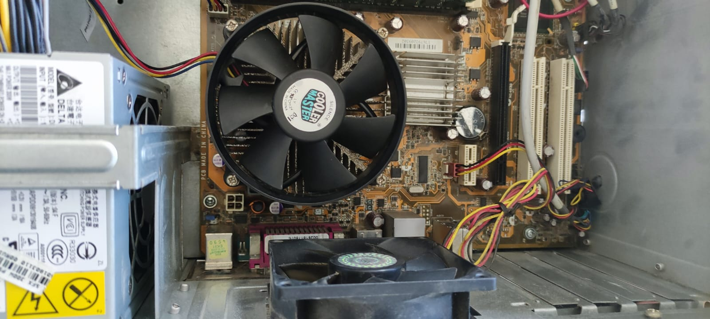
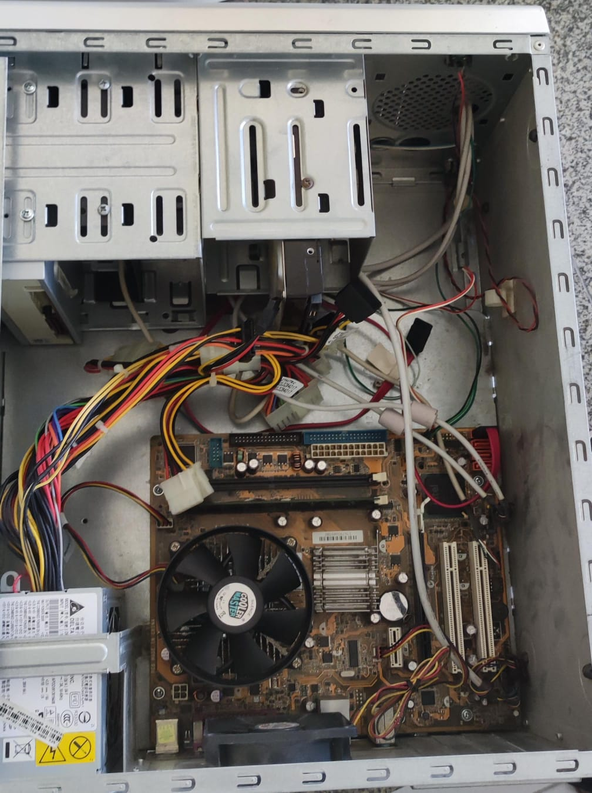

Primeiro Ano
TPA - Técnicas de Programação e Algoritmos
Foi o nosso coordenador, Neymar, que deu esta matéria, onde aprendemos Python
Algumas das atividades:
BD I - Banco de Dados I
O professor desta disciplina foi Claudio Ferrini, e aprendemos a linguagem SQL, especificamente, os subconjuntos: DDL, DML, DQL.
DDL: Define ou modifica a estrutura do banco de dados (tabelas, índices, esquemas).
DML: Manipula os dados dentro das tabelas, inserindo, atualizando ou removendo registros.
DQL: Focada na consulta e visualização de dados armazenados.
Algumas das atividades desenvolvidas:
DD - Design Digital
Disciplina ministrada pelo coordenador do curso e professor Neymar, onde desenvolvemos um jogo, do início do ano até o final do ano.
A seguir, o jogo desenvolvido:
APS - Análise e Projeto de Sistemas
Nosso professor nesta matéria foi o Gildárcio, ele nos ensinou a fazer diagramas de caso de uso, requisitos funcionais e não-funcionais, métodos ágeis, etc
Diagramas realizados para a disciplina:



PW I - Programação Web I
Neste ano, aprendemos HTML, CSS e bem pouquinho de JavaScript, a aula era ministrada pelo professor Claudiney.
A seguir, o último projeto que fizemos naquele ano:
FI - Fundamentos da Informática
Esta era uma aula onde focavamos principamente em fazer relatórios sobre o estado do computador e pesquisas relacionadas ao hardware, sistema operacional, segurança e manutenção do computador. Essa aula era dada pela professora Sigiane
Fotos tiradas por mim e de mim na aula prática de FI:




Segundo Ano
DS - Desenvolvimento de Sistemas
Único ano com essa matéria, sendo dada pelo professor Lúcio Ramos. Nela, aprendemos C#.
A seguir, o projeto que fizemos naquele ano para esta matéria:
BD II - Banco de Dados II
Aula de banco de dados, aprofundamos sobre as views, cases e triggers principalmente. Era dada pelo professor Neymar.
Último exercício daquele ano:
Banco de Dados de uma Padaria - DownloadPAM I - Programação de Aplicativos Mobile I
Primeiro ano com programação mobile, aprendemos PowerApps. Era ministrada pelo professor Lúcio Ramos.
ECO - Ética e Cidadania Organizacional
Aula de Ética, sendo ministrada pela professora e ex-diretora Vera Lúcia.
PW II - Programação Web II
Neste ano, vimos sobre PHP e o CRUD, a matéria foi ministrada novamente pelo professor Claudiney.